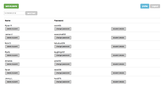
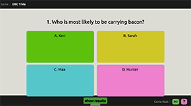

Passworder
Passworder is a web app for teachers that generates and stores student passwords for administrative purposes.
passworder-app.herokuapp.com
github.com/jimlengel/passworder

Game the Progress
Game the Progress is a web app designed to give teachers a platform to custom build and play game quizzes with multiple players/students. It creates an engaging environment where learning becomes fun.
github.com/jimlengel/game_the_progress
Technology Integration Specialist and Programming Teacher
The Hamlin School, 2011 - 2016
- Developed and implemented K-8 programming curriculum
- Taught students how to use Photoshop for web design and photography
- Trained teachers to teach Scratch programming
- Developed curriculum for Digital Arts for 5 years, including using a laser cutter, vinyl cutters, and 3D printers
- Taught students to code HTML, CSS, and Scratch from MIT
Fourth Grade Teacher
Katherine Delmar Burke School, 2007 - 2011
- Led a teacher training on using wikis in the classroom to teach writing
- Taught students to use HyperCard Studio to create dynamic presentations
Webmaster
COLAGE, 2008 - 2011
- As a contractor, maintained website from weekly updates, including hand-coding HTML, CSS, and Javascript, and updating images using Photoshop
Teacher Trainer
United States Peace Corps, 2002 - 2004
- Taught students English and trained English teachers in rural Nepal for two years
- Helped NGOs create a online retail web presence
- Developed curriculum to train Nepali English-language teachers
- Wrote, published, and distributed a how-to manual for Nepali teachers who were teaching the first-grade English curriculum
Webmaster
Dimmick and Fornari Advertising Agency, 1999 - 2000
- Designed and updated websites using HTML, CSS, Photoshop, and Flash
- Debugged HTML and CSS in client sites
Senior Client Consultant
Pegasystems, 1997 - 1999
- Configured CSR software to client specifications
- Met with client, thoroughly covered the workflow, and created software solutions that met their needs
- Received recognition from the president of Sears for successfully finishing my workflow on time
- Debugged software for clients
- Traveled to Texas 95% of the time